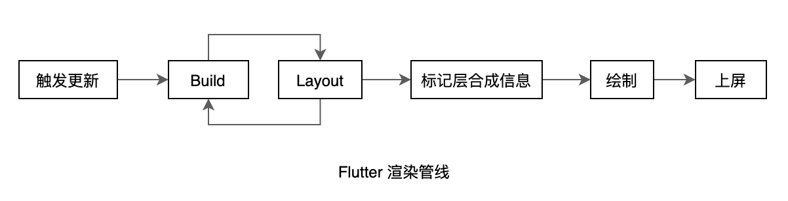

14.3 Flutter启动流程和渲染管线
本节我们会先介绍一下Flutter的启动流程，然后再介绍一下 Flutter 的 rendering pipeline (渲染管线)。
14.3.1 应用启动
Flutter的入口在"lib/main.dart"的main()函数中，它是Dart应用程序的起点。在Flutter应用中，main()函数最简单的实现如下：
void main() => runApp(MyApp());
可以看main()函数只调用了一个runApp()方法，我们看看runApp()方法中都做了什么：
void runApp(Widget app) {
WidgetsFlutterBinding.ensureInitialized()
..attachRootWidget(app)
..scheduleWarmUpFrame();
}
参数app是一个 widget，它是 Flutter 应用启动后要展示的第一个组件。而WidgetsFlutterBinding正是绑定widget 框架和Flutter 引擎的桥梁，定义如下：
class WidgetsFlutterBinding extends BindingBase with GestureBinding, ServicesBinding, SchedulerBinding, PaintingBinding, SemanticsBinding, RendererBinding, WidgetsBinding {
static WidgetsBinding ensureInitialized() {
if (WidgetsBinding.instance == null)
WidgetsFlutterBinding();
return WidgetsBinding.instance;
}
}
可以看到WidgetsFlutterBinding继承自BindingBase 并混入了很多Binding，在介绍这些Binding之前我们先介绍一下Window，下面是Window的官方解释：
The most basic interface to the host operating system's user interface.
很明显，Window 正是 Flutter Framework 连接宿主操作系统的接口。我们看一下 Window 类的部分定义：
class Window {
// 当前设备的DPI，即一个逻辑像素显示多少物理像素，数字越大，显示效果就越精细保真。
// DPI是设备屏幕的固件属性，如Nexus 6的屏幕DPI为3.5
double get devicePixelRatio => _devicePixelRatio;
// Flutter UI绘制区域的大小
Size get physicalSize => _physicalSize;
// 当前系统默认的语言Locale
Locale get locale;
// 当前系统字体缩放比例。
double get textScaleFactor => _textScaleFactor;
// 当绘制区域大小改变回调
VoidCallback get onMetricsChanged => _onMetricsChanged;
// Locale发生变化回调
VoidCallback get onLocaleChanged => _onLocaleChanged;
// 系统字体缩放变化回调
VoidCallback get onTextScaleFactorChanged => _onTextScaleFactorChanged;
// 绘制前回调，一般会受显示器的垂直同步信号VSync驱动，当屏幕刷新时就会被调用
FrameCallback get onBeginFrame => _onBeginFrame;
// 绘制回调
VoidCallback get onDrawFrame => _onDrawFrame;
// 点击或指针事件回调
PointerDataPacketCallback get onPointerDataPacket => _onPointerDataPacket;
// 调度Frame，该方法执行后，onBeginFrame和onDrawFrame将紧接着会在合适时机被调用，
// 此方法会直接调用Flutter engine的Window_scheduleFrame方法
void scheduleFrame() native 'Window_scheduleFrame';
// 更新应用在GPU上的渲染,此方法会直接调用Flutter engine的Window_render方法
void render(Scene scene) native 'Window_render';
// 发送平台消息
void sendPlatformMessage(String name,
ByteData data,
PlatformMessageResponseCallback callback) ;
// 平台通道消息处理回调
PlatformMessageCallback get onPlatformMessage => _onPlatformMessage;
... //其他属性及回调
}
可以看到Window类包含了当前设备和系统的一些信息以及Flutter Engine的一些回调。现在我们再回来看看WidgetsFlutterBinding混入的各种Binding。通过查看这些 Binding的源码，我们可以发现这些Binding中基本都是监听并处理Window对象的一些事件，然后将这些事件按照Framework的模型包装、抽象然后分发。可以看到WidgetsFlutterBinding正是粘连Flutter engine与上层Framework的“胶水”。
GestureBinding：提供了window.onPointerDataPacket回调，绑定Framework手势子系统，是Framework事件模型与底层事件的绑定入口。ServicesBinding：提供了window.onPlatformMessage回调， 用于绑定平台消息通道（message channel），主要处理原生和Flutter通信。SchedulerBinding：提供了window.onBeginFrame和window.onDrawFrame回调，监听刷新事件，绑定Framework绘制调度子系统。PaintingBinding：绑定绘制库，主要用于处理图片缓存。SemanticsBinding：语义化层与Flutter engine的桥梁，主要是辅助功能的底层支持。RendererBinding: 提供了window.onMetricsChanged、window.onTextScaleFactorChanged等回调。它是渲染树与Flutter engine的桥梁。WidgetsBinding：提供了window.onLocaleChanged、onBuildScheduled等回调。它是Flutter widget层与engine的桥梁。
WidgetsFlutterBinding.ensureInitialized()负责初始化一个WidgetsBinding的全局单例，紧接着会调用WidgetsBinding的attachRootWidget方法，该方法负责将根Widget添加到RenderView上，代码如下：
void attachRootWidget(Widget rootWidget) {
_renderViewElement = RenderObjectToWidgetAdapter<RenderBox>(
container: renderView,
debugShortDescription: '[root]',
child: rootWidget
).attachToRenderTree(buildOwner, renderViewElement);
}
注意，代码中的有renderView和renderViewElement两个变量，renderView是一个RenderObject，它是渲染树的根，而renderViewElement是renderView对应的Element对象，可见该方法主要完成了根widget到根 RenderObject再到根Element的整个关联过程。我们看看attachToRenderTree的源码实现：
RenderObjectToWidgetElement<T> attachToRenderTree(BuildOwner owner, [RenderObjectToWidgetElement<T> element]) {
if (element == null) {
owner.lockState(() {
element = createElement();
assert(element != null);
element.assignOwner(owner);
});
owner.buildScope(element, () {
element.mount(null, null);
});
} else {
element._newWidget = this;
element.markNeedsBuild();
}
return element;
}
该方法负责创建根element，即 RenderObjectToWidgetElement，并且将element与widget 进行关联，即创建出 widget树对应的element树。如果element 已经创建过了，则将根element 中关联的widget 设为新的，由此可以看出element 只会创建一次，后面会进行复用。那么BuildOwner是什么呢？其实它就是widget framework的管理类，它跟踪哪些 widget 需要重新构建。
组件树在构建（build）完毕后，回到runApp的实现中，当调用完attachRootWidget后，最后一行会调用 WidgetsFlutterBinding 实例的 scheduleWarmUpFrame() 方法，该方法的实现在SchedulerBinding 中，它被调用后会立即进行一次绘制，在此次绘制结束前，该方法会锁定事件分发，也就是说在本次绘制结束完成之前 Flutter 将不会响应各种事件，这可以保证在绘制过程中不会再触发新的重绘。
14.3.2 渲染管线
1. Frame
一次绘制过程，我们称其为一帧（frame）。我们之前说的 Flutter 可以实现60fps（Frame Per-Second）就是指一秒钟最多可以触发 60 次重绘，FPS 值越大，界面就越流畅。这里需要说明的是 Flutter中 的 frame 概念并不等同于屏幕刷新帧（frame），因为Flutter UI 框架的 frame 并不是每次屏幕刷新都会触发，这是因为，如果 UI 在一段时间不变，那么每次屏幕刷新都重新走一遍渲染流程是不必要的，因此，Flutter 在第一帧渲染结束后会采取一种主动请求 frame 的方式来实现只有当UI可能会改变时才会重新走渲染流程。
- Flutter 在
window上注册一个onBeginFrame和一个onDrawFrame回调，在onDrawFrame回调中最终会调用drawFrame。 - 当我们调用
window.scheduleFrame()方法之后，Flutter引擎会在合适的时机（可以认为是在屏幕下一次刷新之前，具体取决于Flutter引擎的实现）来调用onBeginFrame和onDrawFrame。
可以看见，只有主动调用scheduleFrame() ，才会执行 drawFrame。所以，我们在Flutter 中的提到 frame 时，如无特别说明，则是和 drawFrame() 的调用对应，而不是和屏幕的刷新频率对应。
2. Flutter 调度过程 SchedulerPhase
Flutter 应用执行过程简单来讲分为 idle 和 frame 两种状态，idle 状态代表没有 frame 处理，如果应用状态改变需要刷新 UI，则需要通过scheduleFrame()去请求新的 frame，当 frame 到来时，就进入了frame状态，整个Flutter应用生命周期就是在 idle 和 frame 两种状态间切换。
frame 处理流程
当有新的 frame 到来时，具体处理过程就是依次执行四个任务队列：transientCallbacks、midFrameMicrotasks、persistentCallbacks、postFrameCallbacks，当四个任务队列执行完毕后当前 frame 结束。综上，Flutter 将整个生命周期分为五种状态，通过 SchedulerPhase 枚举类来表示它们：
enum SchedulerPhase {
/// 空闲状态，并没有 frame 在处理。这种状态代表页面未发生变化，并不需要重新渲染。
/// 如果页面发生变化，需要调用`scheduleFrame()`来请求 frame。
/// 注意，空闲状态只是指没有 frame 在处理，通常微任务、定时器回调或者用户事件回调都
/// 可能被执行，比如监听了tap事件，用户点击后我们 onTap 回调就是在idle阶段被执行的。
idle,
/// 执行”临时“回调任务，”临时“回调任务只能被执行一次，执行后会被移出”临时“任务队列。
/// 典型的代表就是动画回调会在该阶段执行。
transientCallbacks,
/// 在执行临时任务时可能会产生一些新的微任务，比如在执行第一个临时任务时创建了一个
/// Future，且这个 Future 在所有临时任务执行完毕前就已经 resolve 了，这中情况
/// Future 的回调将在[midFrameMicrotasks]阶段执行
midFrameMicrotasks,
/// 执行一些持久的任务（每一个frame都要执行的任务），比如渲染管线（构建、布局、绘制）
/// 就是在该任务队列中执行的.
persistentCallbacks,
/// 在当前 frame 在结束之前将会执行 postFrameCallbacks，通常进行一些清理工作和
/// 请求新的 frame。
postFrameCallbacks,
}
需要注意，我们接下来要重点介绍的渲染管线就是在 persistentCallbacks 中执行的。
3. 渲染管线（rendering pipeline）
当新的 frame 到来时，调用到 WidgetsBinding 的 drawFrame() 方法，我们来看看它的实现：
@override
void drawFrame() {
...//省略无关代码
try {
buildOwner.buildScope(renderViewElement); // 先执行构建
super.drawFrame(); //然后调用父类的 drawFrame 方法
}
}
实际上关键的代码就两行：先重新构建（build），然后再调用父类的 drawFrame 方法，我们将父类的 drawFrame方法展开后：
void drawFrame() {
buildOwner!.buildScope(renderViewElement!); // 1.重新构建widget树
//下面是 展开 super.drawFrame() 方法
pipelineOwner.flushLayout(); // 2.更新布局
pipelineOwner.flushCompositingBits(); //3.更新“层合成”信息
pipelineOwner.flushPaint(); // 4.重绘
if (sendFramesToEngine) {
renderView.compositeFrame(); // 5. 上屏，会将绘制出的bit数据发送给GPU
...
}
}
可以看到主要做了5件事：
-
重新构建widget树。
-
更新布局。
-
更新“层合成”信息。
-
重绘。
-
上屏：将绘制的产物显示在屏幕上
我们称上面的5步为 rendering pipeline，中文翻译为 “渲染流水线” 或 “渲染管线”。而渲染管线的这 5 个步骤的具体过程便是本章重点要介绍的。下面我们以 setState 的执行更新的流程为例先对整个更新流程有一个大概的影响
4. setState 执行流
setState 调用后：
- 首先调用当前 element 的 markNeedsBuild 方法，将当前 element标记为 dirty 。
- 接着调用 scheduleBuildFor，将当前 element 添加到pipelineOwner的 dirtyElements 列表。
- 最后请求一个新的 frame，随后会绘制新的 frame：onBuildScheduled->ensureVisualUpdate->scheduleFrame() 。当新的 frame 到来时执行渲染管线
void drawFrame() {
buildOwner!.buildScope(renderViewElement!); //重新构建widget树
pipelineOwner.flushLayout(); // 更新布局
pipelineOwner.flushCompositingBits(); //更新合成信息
pipelineOwner.flushPaint(); // 更新绘制
if (sendFramesToEngine) {
renderView.compositeFrame(); // 上屏，会将绘制出的bit数据发送给GPU
pipelineOwner.flushSemantics(); // this also sends the semantics to the OS.
_firstFrameSent = true;
}
}
- 重新构建 widget 树：如果 dirtyElements 列表不为空，则遍历该列表，调用每一个element的rebuild方法重新构建新的widget（树），由于新的widget(树)使用新的状态构建，所以可能导致widget布局信息（占用的空间和位置）发生变化，如果发生变化，则会调用其renderObject的markNeedsLayout方法，该方法会从当前节点向父级查找，直到找到一个relayoutBoundary的节点，然后会将它添加到一个全局的nodesNeedingLayout列表中；如果直到根节点也没有找到relayoutBoundary，则将根节点添加到nodesNeedingLayout列表中。
- 更新布局：遍历nodesNeedingLayout数组，对每一个renderObject重新布局（调用其layout方法），确定新的大小和偏移。layout方法中会调用markNeedsPaint()，该方法和 markNeedsLayout 方法功能类似，也会从当前节点向父级查找，直到找到一个isRepaintBoundary属性为true的父节点，然后将它添加到一个全局的nodesNeedingPaint列表中；由于根节点（RenderView）的 isRepaintBoundary 为 true，所以必会找到一个。查找过程结束后会调用 buildOwner.requestVisualUpdate 方法，该方法最终会调用scheduleFrame()，该方法中会先判断是否已经请求过新的frame，如果没有则请求一个新的frame。
- 更新合成信息：先忽略，我们在14.8节专门介绍。
- 更新绘制：遍历nodesNeedingPaint列表，调用每一个节点的paint方法进行重绘，绘制过程会生成Layer。需要说明一下，flutter中绘制结果是保存在Layer中的，也就是说只要Layer不释放，那么绘制的结果就会被缓存，因此，Layer可以跨frame来缓存绘制结果，避免不必要的重绘开销。Flutter框架绘制过程中，遇到isRepaintBoundary 为 true 的节点时，才会生成一个新的Layer。可见Layer和 renderObject 不是一一对应关系，父子节点可以共享，这个我们会在随后的一个试验中来验证。当然，如果是自定义组件，我们可以在renderObject中手动添加任意多个 Layer，这通常用于只需一次绘制而随后不会发生变化的绘制元素的缓存场景，这个随后我们也会通过一个例子来演示。
- 上屏：绘制完成后，我们得到的是一棵Layer树，最后我们需要将Layer树中的绘制信息在屏幕上显示。我们知道Flutter是自实现的渲染引擎，因此，我们需要将绘制信息提交给Flutter engine，而
renderView.compositeFrame正是完成了这个使命。
以上，便是setState被调用到UI更的大概更新过程，实际的流程会更复杂一些，比如在build过程中是不允许再调用setState的，框架需要做一些检查。又比如在frame中会涉及到动画的调度、在上屏时会将所有的Layer添加到场景（Scene）对象后，再渲染Scene。上面的流程读者先有个印象即可，我们将在后面的小节中详细介绍。
5. setState 执行时机问题
setState 会触发 build，而 build 是在执行 persistentCallbacks 阶段执行的，因此只要不是在该阶段执行 setState 就绝对安全，但是这样的粒度太粗，比如在transientCallbacks 和 midFrameMicrotasks 阶段，如果应用状态发生变化，最好的方式是只将组件标记为 dirty，而不用再去请求新的 frame ，因为当前frame 还没有执行到 persistentCallbacks，因此后面执行到后就会在当前帧渲染管线中刷新UI。因此，setState 在标记完 dirty 后会先判断一下调度状态，如果是 idle 或 执行 postFrameCallbacks 阶段才会去请求新的 frame :
void ensureVisualUpdate() {
switch (schedulerPhase) {
case SchedulerPhase.idle:
case SchedulerPhase.postFrameCallbacks:
scheduleFrame(); // 请求新的frame
return;
case SchedulerPhase.transientCallbacks:
case SchedulerPhase.midFrameMicrotasks:
case SchedulerPhase.persistentCallbacks: // 注意这一行
return;
}
}
上面的代码在大多数情况下是没有问题的，但是如果我们在 build 阶段又调用 setState 的话还是会有问题，因为如果我们在 build 阶段又调用 setState 的话就又会导致 build....这样将将导致循环调用，因此 flutter 框架发现在 build 阶段调用 setState 的话就会报错，如：
@override
Widget build(BuildContext context) {
return LayoutBuilder(
builder: (context, c) {
// build 阶段不能调用 setState, 会报错
setState(() {
++index;
});
return Text('xx');
},
);
}
运行后会报错，控制台会打印：
==== Exception caught by widgets library ====
The following assertion was thrown building LayoutBuilder:
setState() or markNeedsBuild() called during build.
需要注意，如果我们直接在 build 中调用setState ，代码如下：
@override
Widget build(BuildContext context) {
setState(() {
++index;
});
return Text('$index');
}
运行后是不会报错的，原因是在执行 build 时当前组件的 dirty 状态（对应的element中）为 true，只有 build 执行完后才会被置为 false。而 setState 执行的时候会会先判断当前 dirty 值，如果为 true 则会直接返回，因此就不会报错。
上面我们只讨论了在 build 阶段调用 setState 会导致错误，实际上在整个构建、布局和绘制阶段都不能同步调用 setState，这是因为，在这些阶段调用 setState 都有可能请求新的 frame，都可能会导致循环调用，因此如果要在这些阶段更新应用状态时，都不能直接调用 setState。
安全更新
现在我们知道在 build 阶段不能调用 setState了，实际上在组件的布局阶段和绘制阶段也都不能直接再同步请求重新布局或重绘，道理是相同的，那在这些阶段正确的更新方式是什么呢，我们以 setState 为例，可以通过如下方式：
// 在build、布局、绘制阶段安全更新
void update(VoidCallback fn) {
SchedulerBinding.instance.addPostFrameCallback((_) {
setState(fn);
});
}
注意，update 函数只应该在 frame 执行 persistentCallbacks 时执行，其他阶段直接调用 setState 即可。因为 idle 状态会是一个特例，如果 在idle 状态调用 update 的话，需要手动调用 scheduleFrame() 请求新的 frame，否则 postFrameCallbacks 在下一个frame （其他组件请求的 frame ）到来之前不会被执行，因此我们可以将 update 修改一下：
void update(VoidCallback fn) {
final schedulerPhase = SchedulerBinding.instance.schedulerPhase;
if (schedulerPhase == SchedulerPhase.persistentCallbacks) {
SchedulerBinding.instance.addPostFrameCallback((_) {
setState(fn);
});
} else {
setState(fn);
}
}
至此，我们封装了一个可以安全更新状态的 update 函数。
现在我们回想一下，在第十章 “自绘组件：CustomCheckbox” 一节中，为了执行动画，我们在绘制完成之后通过如下代码请求重绘：
SchedulerBinding.instance.addPostFrameCallback((_) {
...
markNeedsPaint();
});
我们并没有直接调用 markNeedsPaint()，而原因正如上面所述。
14.3.3 总结
本节介绍了Flutter App 从启动到显示到屏幕上的主流程，重点是 Flutter 的渲染流程，如图14-4：
需要说明的是 build 过程和 layout 过程是可以交替执行的，这个我们在介绍 LayoutBuilder 一节时已经解释过了。读者需要对整个渲染流程有个大概印象，后面我们会详细介绍，不过在深入介绍渲染管线之前，我们得仔细的了解一下 Element 、BuildContext 和 RenderObject 三个类。